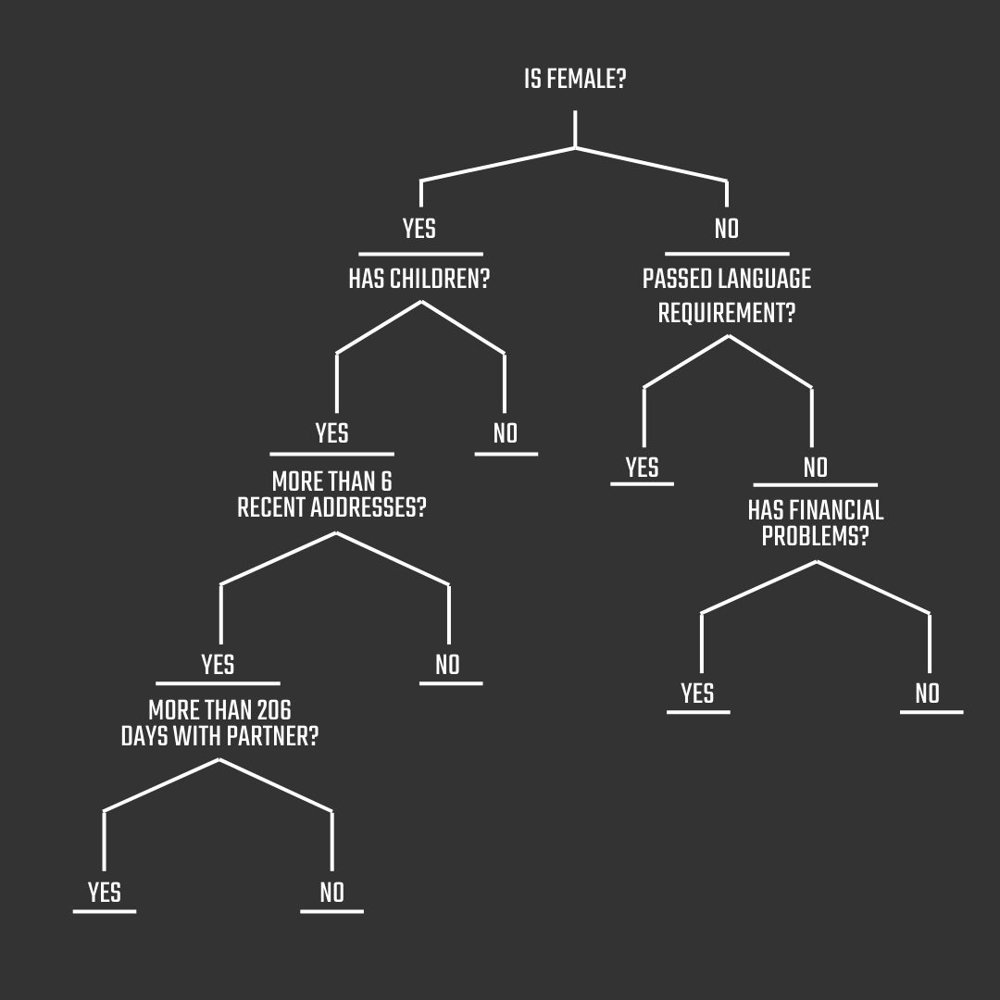
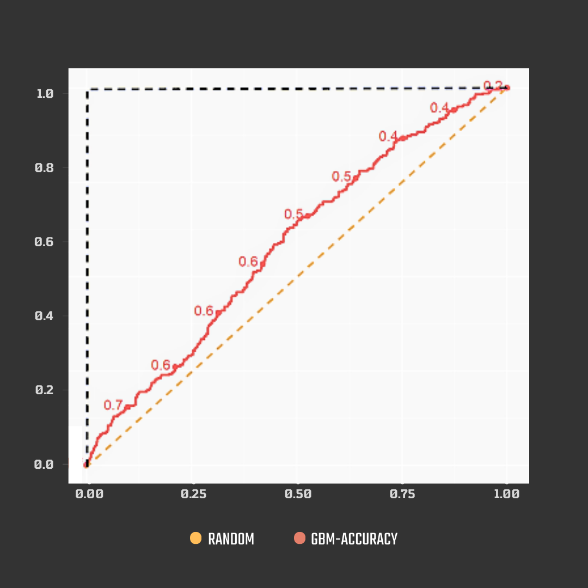
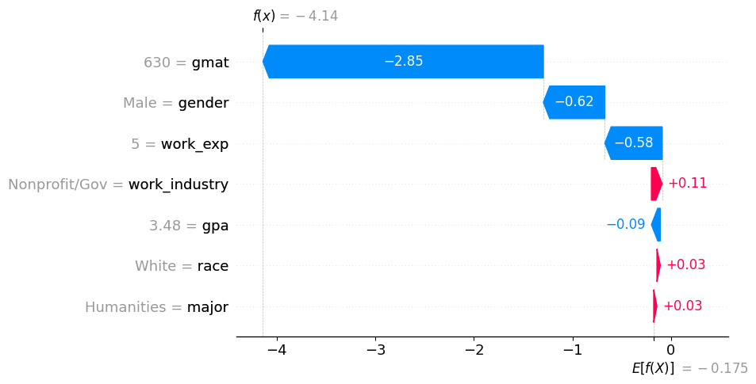
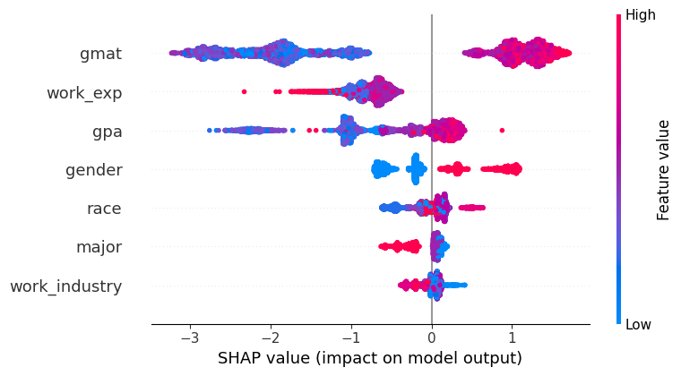
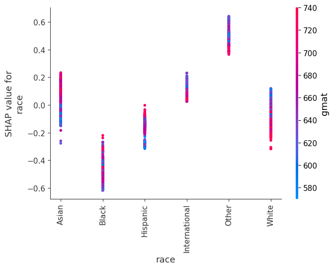

Unpacking Rotterdam's Algorithmic Rollercoaster
All over the world, countless welfare recipients are being investigated after automated systems flag them as potential fraud risks. What many do not realize is that these systems closely monitor and assess their lives, reducing them to a score based on various factors. A journalistic investigation into one of these systems, in Rotterdam, uncovered that it unfairly targets individuals based on their gender and racial background. The investigation found that the system problematically views signs of vulnerability as potential indicators of suspicious activity.
This system is a machine learning model, specifically a gradient boosting machine, a type of machine learning model that uses decision trees as its building blocks. It improves performance by stacking trees sequentially, where each tree corrects the errors of the previous one.
The model uses 500 decision trees. To classify each instance, the values assigned to each person at the leaves of the trees are then combined and adjusted to produce the final risk score.
The model uses supervised machine learning, trained on a labeled dataset of previously investigated cases. The training data consists of individuals who have been investigated, with labels of 'yes fraud' or 'no fraud'.
The system processes 315 input variables for each welfare recipient, including:
Internal evaluations by Rotterdam found that the model is only 50% more accurate at predicting fraud than random selection, raising concerns about effectiveness and false positives.
The model’s ROC curve shows it slightly improves on random guessing, failing to meet performance criteria for real-world application.
Since the code and decision-making process are not publicly available, it's difficult to understand how the algorithm arrives at its conclusions, raising significant transparency concerns.
The algorithm uses a combination of data sources, including government databases and external data providers. However, the quality and accuracy of this data are not publicly disclosed, which raises questions about the reliability of the system's outputs.
There are 54 variables based on subjective assessments made by caseworkers, and any bias by the caseworker would reflect in the data.
Only 52 young welfare recipients were included instead of 880, causing the algorithm to wrongly associate younger individuals with higher fraud risk.
Caseworkers' comments are treated as binary, so both positive and negative comments equally impact the risk score.
Example: 'shows no motivation' and 'shows motivation'⮕ '1'
The court ruled the algorithm unconstitutional in 2020, citing violations of Article 8 of the European Convention on Human Rights.
There were notable societal responses, including protests and legal actions led by civil rights groups against the algorithm. Activists raised issues about privacy and discrimination, resulting in a key court decision in 2020 that ruled the algorithm unconstitutional.
Media coverage played a crucial role in raising awareness, influencing public opinion, and pushing for policy changes regarding similar systems.
The combination of civil society activism and media attention catalyzed significant political dialogue about the future of algorithmic governance in the Netherlands.
The MBA Admission Dataset, Class of 2025 provides a relevant context for examining fairness and explainability in decision-making processes. Both the MBA Admission Dataset and the Rotterdam system share concerns regarding fairness and explainability, albeit in different contexts.
While the Rotterdam system is punitive in nature, denying essential benefits, the MBA admission process is not punitive but still has a significant impact on candidates' future professional opportunities.
| Serial Number | Gender | International | GPA | Major | Race | GMAT | Work Experience | Work Industry | Admission |
|---|---|---|---|---|---|---|---|---|---|
| 1 | Female | False | 3.3 | Business | Asian | 620.0 | 3.0 | Financial | Admit |
| 2 | Male | False | 3.28 | Humanities | Black | 680.0 | 5.0 | Investment Management | - |
| 3 | Female | True | 3.3 | Business | - | 710.0 | 5.0 | Technology | Admit |
| 4 | Male | False | 3.47 | STEM | Black | 690.0 | 6.0 | Technology | - |
| 5 | Male | False | 3.35 | STEM | Hispanic | 590.0 | 5.0 | Consulting | - |
To address class imbalance in the dataset, we applied the Borderline- SMOTE technique. BL-SMOTE is an extension of the Synthetic Minority Over-sampling Technique (SMOTE) that targets borderline instances, which are minority class samples near the decision boundary or surrounded by majority class samples.
These instances are at higher risk of misclassification. By oversampling these borderline instances, BL-SMOTE improves the representation of the minority class in challenging regions, enhancing the model’s ability to correctly classify these cases while minimizing the risk of overfitting.
The classification report evaluates the model’s ability to predict MBA admission, where 0 represents “not admitted” and 1 represents “admitted.”
According to the Trustworthy AI guidelines, AI systems should be transparent and fair. Decisions need to be explained in an understandable manner to humans. For this purpose, LIME (Local Interpretable Model-Agnostic Explanations) and SHAP (SHapley Additive exPlanations) can be used to improve the explainability of any given model.
LIME explains local predictions by approximating them with a simpler, interpretable model.
SHAP explains predictions by distributing contributions among features using Shapley values.
The waterfall plot explains a local prediction and can be directly compared to the LIME plot
The summary plot provdes insights into the global reasoning of the model, helping to understand it as a whole
This dependence plot shows how different races impact the model's prediction
Our approach to counterfactual fairness involved selecting three distinct subsets of individuals from the dataset, altering a sensitive attribute, and examining its impact on the model's predictions.
First example: A subset of false-negative Black individuals who were unjustly denied access to the MBA program by the model:
When their race was switched to White, 39% (14 individuals) were predicted to be accepted by the model.
Second example: A subset of true-positive White individuals who were correctly accepted into the MBA program:
When their race was switched to Black, 33% (54 individuals) were predicted to be rejected by the model.
Third example: A subset of wrongfully rejected Asian women:
When their gender was switched to male, 7% (2 individuals) were predicted to be accepted by the model.
Building fair algorithms means balancing performance with fairness and transparency. Let’s stop letting black-box models make unchecked decisions and start designing AI systems that serve everyone equitably.